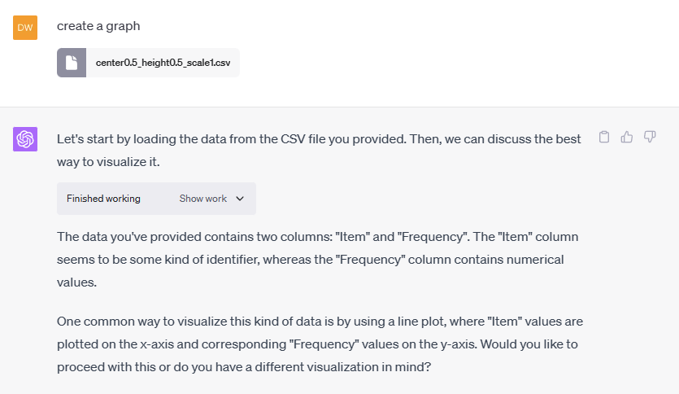
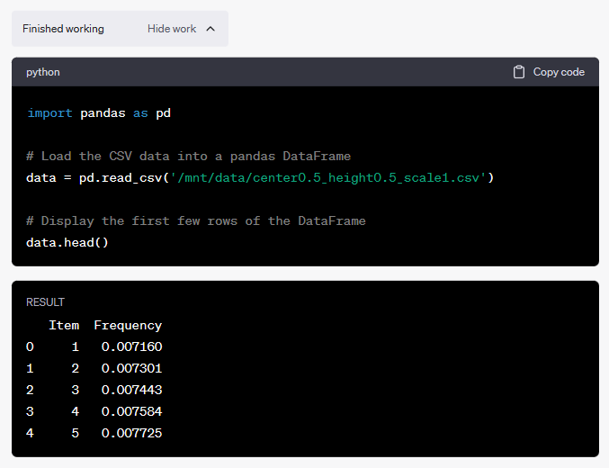
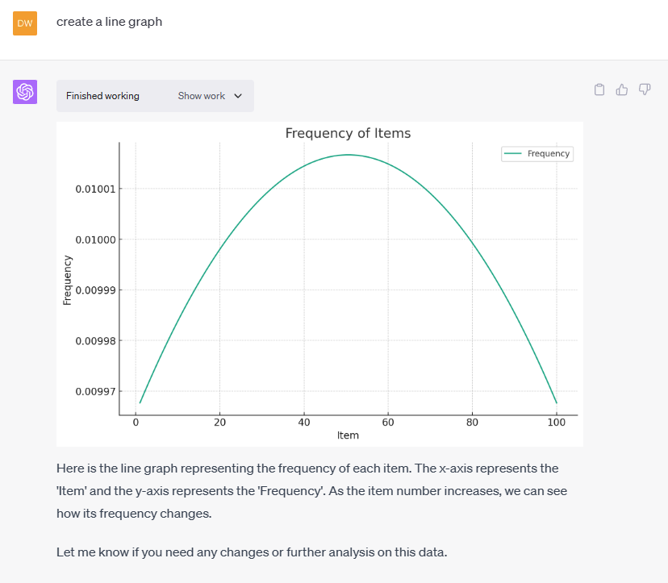
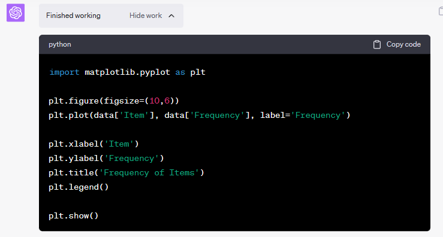

Understanding OpenAI Code Interpreter
Divination is the attempt to gain insight into a question or situation by way of an occultic, standardized process or ritual. Used in various forms throughout history, diviners ascertain their interpretations of how a querent should proceed by reading signs, events, or omens, or through alleged contact or interaction with a supernatural agency. Wikipedia
A couple days ago OpenAI opened access to the GPT-4 API for all paying OpenAI API customers and began rolling out the Code Interpreter plug-in, saying:
“We provide our models with a working Python interpreter in a sandboxed, firewalled execution environment, along with some ephemeral disk space. Code run by our interpreter plugin is evaluated in a persistent session that is alive for the duration of a chat conversation (with an upper-bound timeout) and subsequent calls can build on top of each other. We support uploading files to the current conversation workspace and downloading the results of your work.”
Simply Put with a Demo
You can now share a file by uploading it and ask the chat bot to answer questions about the file’s contents and manipulate it using python code the chat bot writes for you and the plug-in runs to to follow your instructions. You can see the python code if you want as well as copy it. On the other hand, if you understand the task and can engineer prompts effectively, you don’t have to think about or interact with the python code at all.
This feature is not free and requires a ChatGPT Plus subscription.
Upload the file with some instructions
This isn’t a detailed tutorial and there are some steps required to turn everything on which I’m leaving out of this post because I assume it will all change as the service gets more polished.
- Step One – Make sure you have selected GPT-4 and enable the Code Interpreter plugin
- Step Two – Upload a file along with instructions

In this example, I gave the chat bot very little to go on, and so it analyzed the file to understand its contents and then asked me if it understood my desired result. The file comes from the Weighted Randoms sample project and the chat bot’s suggestion was exactly right!
The chat bot used the popular pandas library and you can see the code it ran as well as the result by clicking the Show work button.

Ask questions and do work using the file
My Weighted Randoms sample project contains a Jupyter notebook for visualization of the data in the various csv files. Code Interpreter can do the same.
- Step 3: Ask it to do more with the file such as “create a line graph”

In my Jupyter notebook, I used matplotlib. As you can see, so did Code Interpreter.

Thoughts and Observations
First off, once again I am astounded by how useful this is. It wasn’t 24 hours when I saw this breathless headline: Code Interpreter might be most useful application of A.I. so far, says Wharton professor.
He might be right, but this pattern, which I will be writing about often, is easily extended. So, we ain’t seen nothing yet!
On the other hand, it is important to understand the limitations. This example was trivial, but it did require me to ask questions and direct the assistant. So, the first limitation is that it isn’t autonomous, it does make mistakes, and you have to know enough to be able to direct it. The second is the size of the context window. This second limitation is very subtle and can lead to all sorts of problems because **exceeding it causes hallucinations and it isn’t at all obvious when you cross the line!
In fact, this context window size is always a challenge, but here I speculate it will be extra challenging because the python sandbox can hold way more information in its memory as compared to the number of tokens which the chat bot can keep track of. The potential for hilarious mistakes is real so keep your data scientists close by and don’t think this tool can safely replace them.
I think of this tool as a fantastic supplement to the idea of citizen data scientists in the same way traditional productivity tools have enabled people who are not developers to create basic solutions for themselves, and as always, there is a line, above which, deeper expertise is still required.
It seems like every week I post something along the lines of ”this is an important thing you should know about!” but that is where we are my friends.
-- Doug Ware. July 9, 2023